Agentic Endpoint Security (AES)
Hands-on Workshop
Руководство к лабораторной работе: в роли разработчика посмотрите, как рискованное ПО блокируется в момент установки, а в роли SOC-администратора управляйте этими механизмами контроля.
О воркшопе
На этом воркшопе вы будете работать с Agentic Endpoint Security (AES) в двух ролях. В роли Developer вы увидите, что происходит при попытке установить рискованное расширение или пакет. В роли SOC admin вы изучите и настроите в консоли параметры, которые обеспечивают эти блокировки.
Сценарий: вы работаете в команде безопасности вымышленной компании Boğaziçi Teknoloji A.Ş. EDR работает, оповещений нет. Однако за последние полгода разработчики начали самостоятельно устанавливать AI coding agents, расширения для VS Code и браузера, а также MCP-серверы. Руководство хочет получить ответы на вопросы: «Что установлено на машинах, к чему у этих инструментов есть доступ и можем ли мы заблокировать что-то рискованное в момент установки?»
| Роль | Где работает | Что делает |
|---|---|---|
| DEVELOPER | Лабораторная машина (RDP) | Устанавливает расширения и пакеты, отправляет запросы на одобрение заблокированных установок |
| SOC ADMIN | Консоль AES (браузер) | Изучает inventory и риски, управляет политиками, рассматривает запросы на одобрение, запускает remediation |
Каждый участник работает самостоятельно и выполняет обе роли. Каждый участник получает лабораторную машину и собственную группу endpoint'ов в консоли AES. Пример с AI-агентом в конце раздела 8 инструктор показывает вживую.
| # | Раздел | Роль |
|---|---|---|
| 0 | Подготовка | DEVELOPER + SOC ADMIN |
| 1 | Безопасная установка расширения | DEVELOPER |
| 2 | Рискованное расширение и Request Approval | DEVELOPER → SOC ADMIN |
| 3 | Блокировка npm-пакета | DEVELOPER |
| 4 | Inventory: обнаружение Shadow AI | SOC ADMIN |
| 5 | Анализ рисков | SOC ADMIN |
| 6 | Guardrails, политики и Impact Check | SOC ADMIN |
| 7 | Remediation | SOC ADMIN → DEVELOPER |
| 8 | Runtime: AI coding agent | SOC ADMIN + Demo |
| 9 | Threat Intel: Threat Center | SOC ADMIN |
| 10 | Заключение |
0. Подготовка
В этом разделе вы подключитесь к своей лабораторной машине, войдёте в консоль AES и, следуя шагам в консоли, сами настроите сертификат и прокси, необходимые для того, чтобы трафик маркетплейсов проходил через AES.
0.1 Лабораторная машина
- DEVELOPER Подключитесь к лабораторной машине по выданному вам RDP-адресу и учётным данным.
- DEVELOPER Откройте на рабочем столе Proje Terminali (терминал проекта) и запишите hostname машины. По этому имени вы найдёте свою машину в консоли.
hostname- DEVELOPER Убедитесь, что служба AES запущена. Все команды из этого руководства также есть в файле komutlar.txt на рабочем столе:
Get-Service | Where-Object { $_.DisplayName -like "*Koi*" }Служба должна быть в состоянии Running.
ПримечаниеAES не устанавливается на endpoint как классический агент. Он работает как читаемый script package и собирает данные inventory через определённые интервалы. При желании вы можете открыть скрипт и изучить его содержимое.
0.2 Вход в консоль AES
- SOC ADMIN В Chrome откройте Webmail из папки AES Workshop на панели закладок (
webmail.torsque.com). Войдите с выданным вам адресом электронной почты воркшопа (например,student1@torsque.com) и паролем. - SOC ADMIN В новой вкладке откройте AES Konsol (консоль AES). Для этого можно использовать папку AES Workshop или ярлык на рабочем столе. Вместо SSO выберите вход по электронной почте и введите тот же адрес электронной почты воркшопа.
- SOC ADMIN Вернитесь на вкладку Webmail. Нажмите ссылку в письме для подтверждения от AES и дождитесь открытия консоли.
После входа откроется Dashboard. На нём собрана сводка по среде: обнаруженное вредоносное ПО, открытые remediation и запросы на одобрение, общее число элементов и endpoint'ов, распределение по item type и платформам, уровни риска и элементы, автоматически заблокированные AES.

- SOC ADMIN Найдите свою машину в списке endpoint'ов по hostname.
- SOC ADMIN Убедитесь, что ваша машина назначена в вашу группу (например,
AES-USER01). Политики, которые вы создадите во время воркшопа, применяются только к этой группе и не затрагивают других участников.
ПримечаниеУ каждого участника свой адрес электронной почты воркшопа; используйте только выданный вам адрес. Если письмо для подтверждения не пришло в течение нескольких минут, проверьте папку «Спам» в webmail.
0.3 Network Routing: настройка сертификата и прокси
Трафик маркетплейсов, таких как Chrome Web Store и VS Code Marketplace, направляется на прокси AES с помощью PAC-файла. Чтобы прокси мог инспектировать этот трафик, машина должна доверять корневому сертификату AES Root CA. Сертификат и адрес PAC-файла вы получите в консоли AES.
На схеме ниже показано, как работает AES. Трафик маркетплейсов с endpoint'ов проходит через прокси AES и разрешается или блокируется в соответствии с политиками на платформе; остальной трафик идёт напрямую в интернет. Скрипт AES на endpoint'е отправляет данные inventory на платформу, а risk pipeline сканирует маркетплейсы и передаёт результаты оценки рисков на платформу. SOC-администратор отслеживает всё это и управляет этим из консоли.
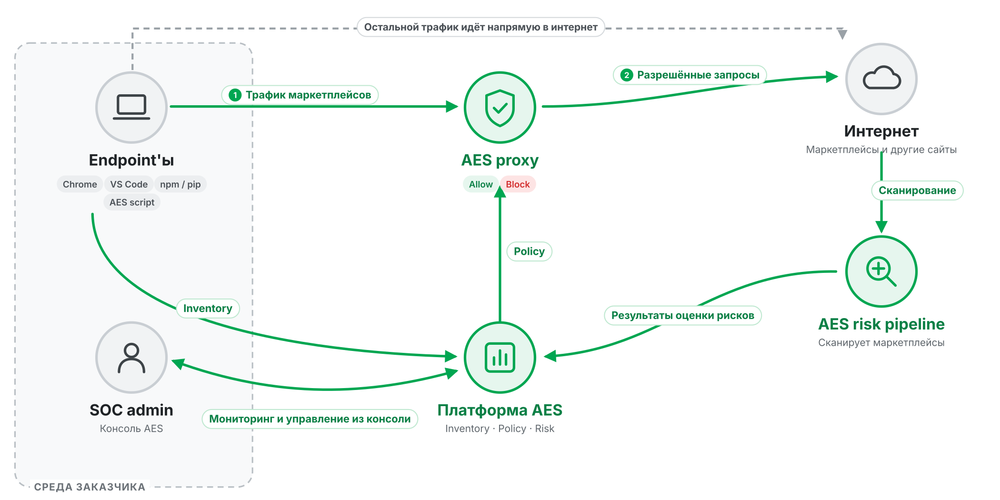
- SOC ADMIN В консоли нажмите Settings в левом нижнем углу и в разделе Workspace выберите Deployment. На карточке Network Routing нажмите Update Deployment.
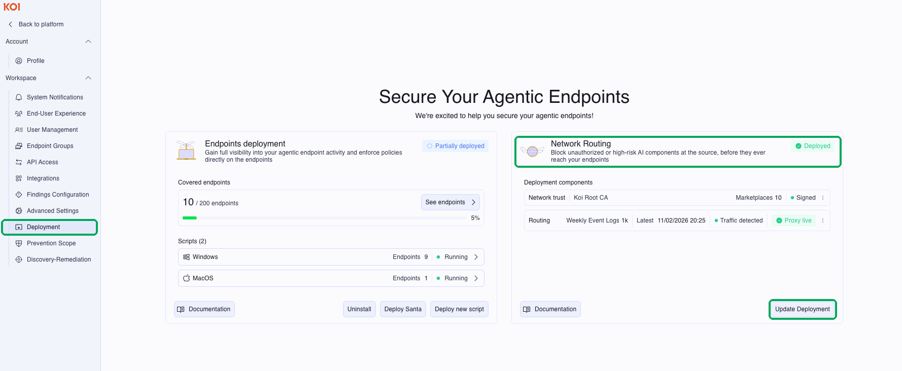
- SOC ADMIN В левой части открывшегося окна показаны три шага: Set up network integration, Establish network trust и Route network traffic. На первом шаге выбирается способ перенаправления трафика маркетплейсов в AES. На этом воркшопе выберите PAC file и нажмите Next.
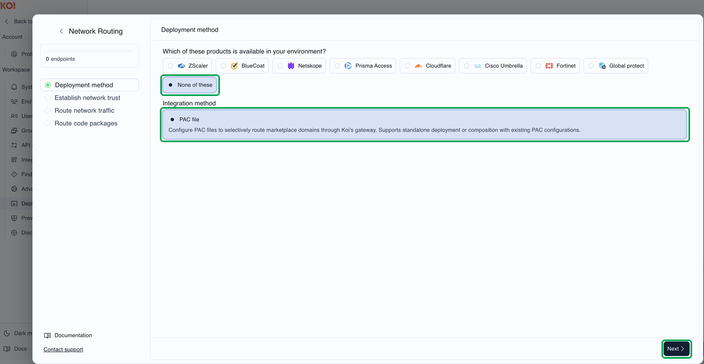
В лабораторной среде используется PAC-файл, так как отдельного прокси или SWG-решения в ней нет. В реальных средах трафик маркетплейсов также можно направлять в AES через используемое в компании SASE/SWG-решение:
| Способ | Как работает |
|---|---|
| PAC file | Домены маркетплейсов направляются на прокси AES с помощью PAC-файла. PAC-файл можно использовать отдельно или добавить в существующий PAC-файл; он распространяется вручную, через script package AES или через MDM. |
| Prisma Access | PAC-файл распространяется через forwarding profile Prisma Access в режиме GlobalProtect Tunnel + Proxy или Proxy (Explicit Proxy). |
| GlobalProtect | Если GlobalProtect работает в режиме Tunnel-only, PAC-файл распространяется на endpoint'ы отдельно. |
| Zscaler – Proxy Chaining | В Zscaler ZIA создаётся правило forwarding, и домены маркетплейсов передаются на прокси AES через proxy chaining. |
| Netskope – Proxy Chaining | Netskope SWG остаётся на пути трафика и передаёт домены маркетплейсов в AES как upstream proxy. |
| Netskope – Bypass | Домены маркетплейсов исключаются из правил steering Netskope и направляются напрямую на прокси AES с помощью PAC-файла. |
| BlueCoat | В Symantec ProxySG создаются правила forwarding, и трафик маркетплейсов передаётся в AES через proxy chaining. |
| Cloudflare | В Cloudflare Zero Trust домены маркетплейсов направляются на прокси AES с помощью DNS override или egress policy. |
| Cisco Umbrella | Домены маркетплейсов задаются в Umbrella как External Domains и исключаются из SWG; загруженный в Umbrella PAC-файл отправляет этот трафик в AES. |
| Fortinet | FortiGate передаёт трафик маркетплейсов на прокси AES через proxy chaining или explicit proxy. |
ПримечаниеПри интеграции с SWG/SASE для сертификата обычно используется метод Trust via Customer CA (CSR): CSR, предоставленный AES, подписывается собственным корневым CA компании, поэтому распространять на endpoint'ы дополнительный сертификат не нужно.
Сертификат
- SOC ADMIN На шаге Establish network trust убедитесь, что выбран вариант Quick Trust via Koi Root CA.
- SOC ADMIN На шаге Download the Koi Root CA справа нажмите Download CA. Файл сертификата сохранится в папку Downloads. Затем нажмите Next, чтобы перейти к шагу Deploy the certificate in your environment; на этом шаге вы установите сертификат на машину.

- DEVELOPER Откройте на рабочем столе Proje Terminali (терминал проекта). С помощью приведённых ниже команд добавьте скачанный сертификат в хранилище Trusted Root Certification Authorities своего пользователя (aes-user). Права администратора для этого не нужны:
$ca = Get-ChildItem "$env:USERPROFILE\Downloads\*" -Include *.pem,*.crt,*.cer | Sort-Object LastWriteTime -Descending | Select-Object -First 1certutil -user -addstore -f Root $ca.FullNameWindows покажет предупреждение с вопросом, хотите ли вы установить сертификат; нажмите Yes. В последней строке вывода должно быть CertUtil: -addstore command completed successfully.
- DEVELOPER Убедитесь, что сертификат добавлен. С помощью команды: выполните в том же окне терминала следующие команды:
$t = (New-Object System.Security.Cryptography.X509Certificates.X509Certificate2 $ca.FullName).ThumbprintGet-ChildItem Cert:\CurrentUser\Root | Where-Object Thumbprint -eq $tВ выводе должны отображаться Thumbprint и Subject сертификата. Если вывод пустой, сертификат не был добавлен.
- DEVELOPER Вручную: нажмите Win + R, введите
certmgr.mscи нажмите Enter. Откройте папку Trusted Root Certification Authorities → Certificates и найдите в списке сертификат Koi.
Прокси (PAC-файл)
- SOC ADMIN В консоли нажмите Next, чтобы перейти к шагу Route network traffic. Прочитайте раздел Before You Begin: PAC-файл перенаправляет только трафик маркетплейсов из браузера. npm и pip не используют настройку PAC; на лабораторной машине эти два инструмента уже направлены на шлюз AES.
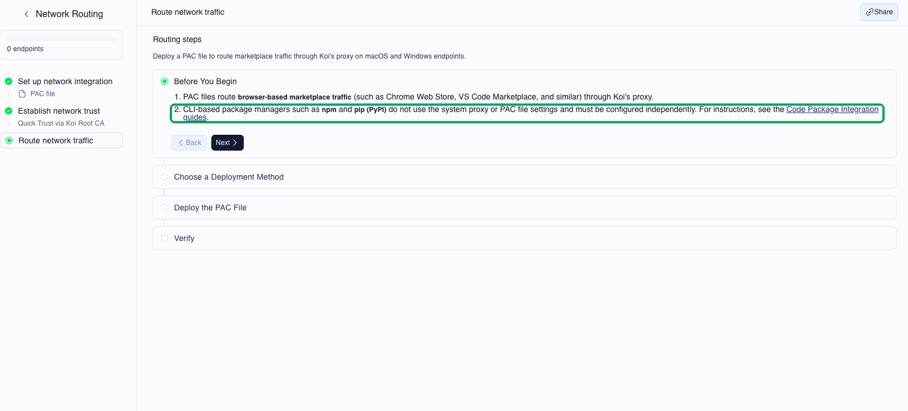
- SOC ADMIN В разделе Choose a Deployment Method скопируйте адрес PAC-файла с помощью значка копирования справа. На этом воркшопе вы будете использовать способ Manual.
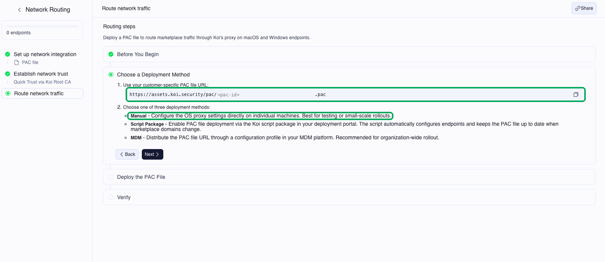
- DEVELOPER Выполните на лабораторной машине шаги для Windows из раздела Deploy the PAC File:
- Откройте Settings → Network & Internet → Proxy.
- Включите Use setup script, вставьте скопированный адрес PAC в поле Script address и нажмите Save.
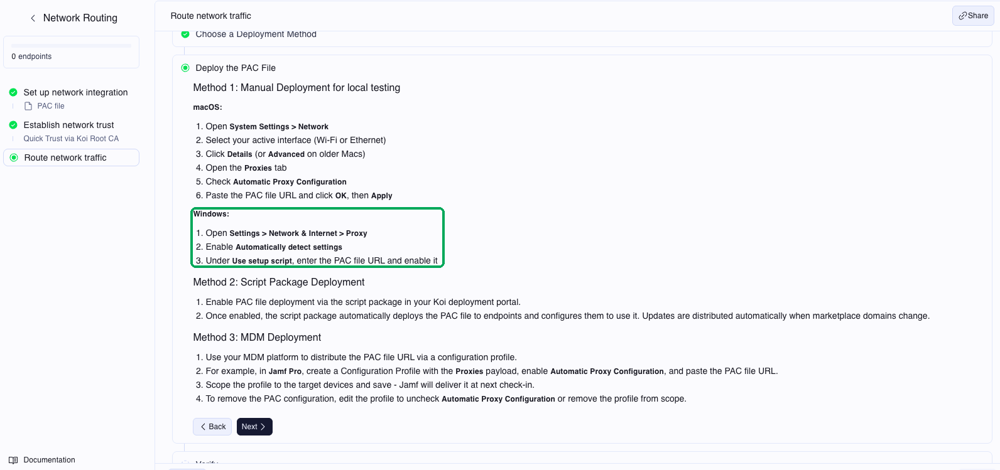
- DEVELOPER Полностью закройте Chrome, откройте его снова и перейдите по адресу:
https://marketplace.visualstudio.com/koiОткроется страница проверки AES с надписью You Are Routing Through Koi! Теперь трафик маркетплейсов проходит через AES.

- SOC ADMIN В консоли нажмите Done, чтобы завершить шаги Network Routing.
ПримечаниеЕсли вместо страницы проверки открывается обычная страница маркетплейса, проверьте адрес PAC и убедитесь, что вы полностью закрыли и снова открыли Chrome. Если появляется ошибка сертификата, проверьте, что сертификат добавлен в хранилище Trusted Root.
Служба AES работает, ваша машина отображается в консоли в вашей группе, а трафик маркетплейсов проходит через AES.
1. End-User Experience: безопасная установка
AES блокирует не все расширения. Расширения, которые не превышают установленный компанией порог риска и не вызывают подозрений в threat intelligence AES, устанавливаются как обычно.
- DEVELOPER Откройте Chrome на лабораторной машине и перейдите в Chrome Web Store.
- DEVELOPER Найдите популярное надёжное расширение. Например, менеджер вкладок с сотнями тысяч пользователей.
- DEVELOPER Нажмите Add to Chrome и завершите установку.
Расширение устанавливается как обычно. Никаких предупреждений, экранов одобрения или ожидания.
2. End-User Experience: рискованное расширение и Request Approval
При попытке установить расширение, которое не соответствует политике компании, AES блокирует установку прямо на странице маркетплейса. В этот момент пользователь может запросить одобрение у команды безопасности. В этом разделе вы увидите два примера блокировки: расширение, помеченное как вредоносное, и расширение, заблокированное политикой компании.
2.1 Расширение, помеченное как вредоносное
- DEVELOPER Найдите в Chrome Web Store следующее расширение и откройте его страницу:
Hulu Ad Skipper | Ad Blocker [QVI]Вместо кнопки Add to Chrome отображается кнопка Request Approval. Поскольку AES помечает это расширение как вредоносное, guardrail Malware Protection блокирует установку.
![Chrome Web Store: кнопка Request Approval на странице Hulu Ad Skipper | Ad Blocker [QVI]](../assets/hulu-request.png)
- DEVELOPER Нажмите Request Approval.
Запрос не создаётся, а в левом нижнем углу экрана появляется предупреждение: "This item can't be approved due to malicious activity. For assistance, contact the security team." Расширение нельзя отправить на одобрение, так как в базе threat intelligence AES оно числится как malware.
2.2 Расширение, заблокированное политикой
- DEVELOPER Найдите в Chrome Web Store следующее расширение и откройте его страницу:
Checker Plus for GmailНа этой странице также вместо Add to Chrome отображается кнопка Request Approval. Это расширение не вредоносное; оно заблокировано, потому что находится в global block list компании.

- DEVELOPER Нажмите Request Approval. Введите приведённый ниже текст в поле Business justification, а в поле электронной почты — свой адрес электронной почты воркшопа, и отправьте запрос:
Нужно для отслеживания уведомлений Gmail.- SOC ADMIN В консоли AES перейдите на страницу Operations → Requests.
- SOC ADMIN Найдите отправленный вами запрос. В нём указаны автор запроса, расширение, обоснование и адрес электронной почты.
- SOC ADMIN Рассмотрите запрос. Вы можете одобрить его или отклонить, указав причину.
ПримечаниеЗапросы на одобрение также можно передавать в системы тикетов, такие как Jira или ServiceNow. Так запросы обрабатываются в рамках существующего процесса команды безопасности.
ПримечаниеЭтот сценарий работает благодаря настройке прокси и сертификата, выполненной в разделе 0.3. Если трафик маркетплейсов не проходит через прокси AES, установка не блокируется.
3. Code Package Prevention: npm
Разработчики и AI coding agents устанавливают пакеты за считаные секунды и зачастую ни у кого не спрашивая. Атаки на цепочку поставок, такие как Shai-Hulud, воспользовались именно этим. В этом разделе вы увидите, как AES останавливает заблокированный пакет до того, как он будет загружен на машину.
- DEVELOPER Откройте на рабочем столе Proje Terminali (терминал проекта). Терминал откроется в папке
C:\Projeler\bogazici-web. - DEVELOPER Сначала установите разрешённый пакет:
npm install chalkПакет устанавливается как обычно.
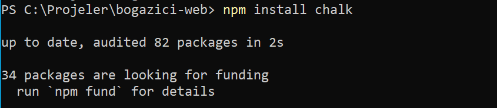
- DEVELOPER Затем попробуйте установить пакет, заблокированный политикой:
npm install buttoncontentУстановка прерывается с ошибкой 403. В терминале отображается причина блокировки (POLICY: Blocklist) и ссылка REQUEST APPROVAL, по которой разработчик может запросить доступ.

- DEVELOPER Убедитесь, что пакет не был загружен на машину:
Test-Path .\node_modules\buttoncontentРезультат должен быть False.
ПримечаниеЗапросы пакетов проверяются на прокси AES до того, как они попадут в публичный реестр. Заблокированный пакет блокируется, даже если его пытаются загрузить как зависимость другого пакета.
4. Inventory: обнаружение Shadow AI
EDR отслеживает бинарные файлы, работающие в операционной системе. Однако он не видит по отдельности расширения, пакеты, MCP-серверы и AI-агентов, работающих внутри этих бинарных файлов. Начиная с этого раздела вы будете работать в роли SOC-администратора.
- SOC ADMIN В консоли AES перейдите в левом меню на страницу Non-Binaries → Extensions. На ней перечислены расширения со всех endpoint'ов. В верхней части страницы показано количество расширений по платформам (Chrome, VS Code, Cursor, Edge и др.).
- SOC ADMIN Отфильтруйте список по своей машине в Query Builder: выберите поле Endpoint и условие contains, введите в качестве значения свой hostname (например,
AES-USER01) и нажмите Run.
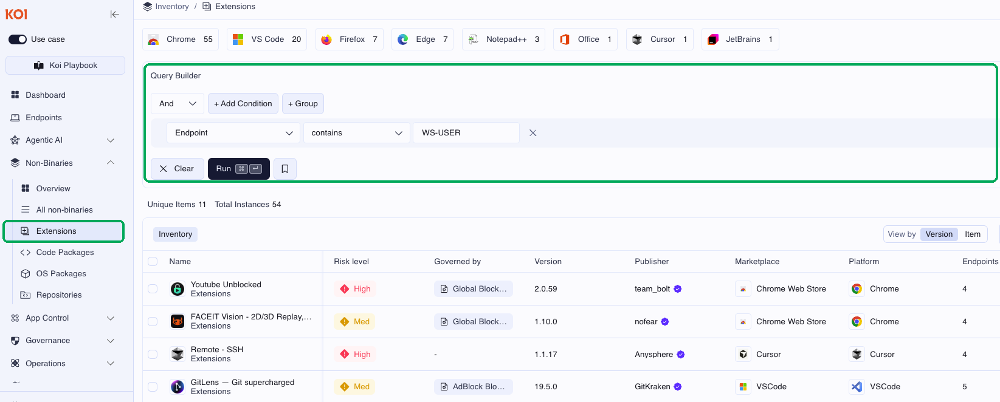
- SOC ADMIN Изучите столбцы списка: Risk level, Governed by (политика или список, применённые к элементу), Version, Publisher, Marketplace, Platform и Endpoints (число машин, на которых установлен элемент).
ПримечаниеВ Query Builder можно использовать несколько условий. С помощью + Add Condition можно добавить условия по полям risk level, publisher, marketplace или platform, а с помощью + Group — сгруппировать условия. Часто используемые запросы можно сохранять.
- SOC ADMIN На странице Agentic AI → AI Agents найдите Claude Code и Codex. Эти инструменты установлены на машине, но не учтены ни в одном другом средстве безопасности. Изучите столбцы risk level, item types и findings.

- SOC ADMIN На странице Agentic AI → MCP Servers откройте сервер
@modelcontextprotocol/server-filesystem. На Supply chain graph посмотрите, с какими приложениями (Claude, Cursor) связан сервер и на скольких endpoint'ах он установлен, а на вкладке MCP Components — к какой папке у него есть доступ.

- SOC ADMIN На странице Non-Binaries → Code Packages найдите пакет
chalk, установленный в разделе 3: в Query Builder выберите Display Name / contains /chalkи нажмите Run.

Inventory отображается с разбивкой по категориям. Пакет chalk появится в списке после следующего сканирования.
ПримечаниеInventory собирается скриптом, который запускается через определённые интервалы, а не постоянно работающим средством мониторинга. Новый элемент может появиться в списке через несколько минут.
(НЕОБЯЗАТЕЛЬНО) Нажмите Clear в Query Builder, чтобы снять фильтр по endpoint'у и увидеть машины всех участников. Переключите параметр View by в правом верхнем углу на Item и посмотрите в столбце Endpoints, на скольких машинах установлен один и тот же элемент.
5. Анализ рисков
AES регулярно сканирует такие маркетплейсы, как npm, PyPI, Hugging Face, Chrome Web Store и VS Code Marketplace. Он запускает код элементов в песочнице и анализирует его с помощью LLM. В этом разделе вы изучите результат такого анализа на примере одного элемента.
- SOC ADMIN Перейдите в левом меню на страницу Endpoints и нажмите на свою машину. На открывшейся справа панели выберите вкладку Inventory. Все элементы на машине отсортированы по risk level.
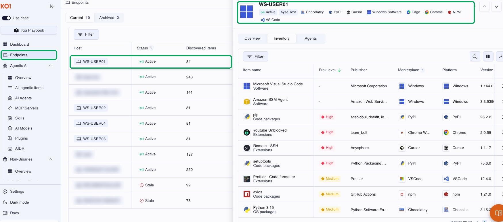
- SOC ADMIN Нажмите на расширение с уровнем Critical или High.
- SOC ADMIN Изучите отчёт о рисках и ответьте на вопросы:
- Какие разрешения (permissions) запрашивает расширение?
- Кто издатель и насколько он надёжен?
- С какими внешними сервисами оно взаимодействует?
- Какой finding сильнее всего повышает оценку риска?
В отчёте о рисках указаны разрешения, сведения об издателе и findings, из которых складывается оценка риска.
ПримечаниеС точки зрения EDR это расширение является частью подписанного доверенного процесса (Code.exe или chrome.exe). EDR разрешает этому процессу работать, но не видит, какое расширение внутри процесса что делает.
6. Governance: Guardrails, Custom Policy и Impact Check
Блокировки, с которыми вы столкнулись в разделах 1–3, обусловлены настройками, которые вы увидите в этом разделе. Сначала вы изучите встроенные guardrails, а затем политики.
6.1 Guardrails
- SOC ADMIN Перейдите в левом меню на страницу Governance → Guardrails.
- SOC ADMIN Найдите на странице следующие guardrails и прочитайте их описания:
| Guardrail | Описание |
|---|---|
| Malware Protection | Блокирует установку элементов, помеченных risk engine AES как вредоносные, и автоматически удаляет уже установленные. Для npm и PyPI только блокирует установку. |
| Scan-First Protection | Не позволяет установить недавно опубликованный элемент, пока не завершится сканирование risk engine AES (обычно от нескольких минут до нескольких часов). |
| Version Update Cooldown | Откладывает переход установленных элементов на новые версии на заданный срок. По умолчанию это 1 день для npm и 2 дня для остальных маркетплейсов. |
| Delayed Access | Блокирует установку недавно опубликованных элементов, пока с даты публикации не пройдёт заданное число дней. |
| Delisted Monitoring | Обнаруживает элементы, удалённые из маркетплейса (delisted), и выводит их на странице Remediation. |
| Sideloading Monitoring | Обнаруживает установленные вручную элементы, которых нет ни в одном маркетплейсе. Не блокирует их, а выводит на странице Remediation. |
| MCP Registry Enforcement | Автоматически удаляет MCP-серверы, установленные не из официального GitHub MCP Registry. Сейчас применяется к VS Code. |
| Block Execution from Risky Paths | Блокирует запуск бинарных файлов из рискованных каталогов, доступных пользователю для записи, например /tmp (macOS). |
| Agent Credential Access Restriction | Запрещает AI coding agents читать файлы с секретами: SSH-ключи, облачные учётные данные, API-токены и файлы вроде .env. |
| Agent Destructive Command Restriction | Запрещает AI coding agents выполнять необратимые команды, такие как rm -rf, DROP DATABASE, terraform destroy и git push --force. |
| Agent Source Code Exfiltration Protection | Запрещает AI coding agents выполнять push, clone, fetch или pull для git-репозиториев, которых нет в списке одобренных. |
- SOC ADMIN Нажмите значок настроек справа от строки Malware Protection. В открывшемся окне изучите параметры Alert-only mode, Superior to 'Global allow list' и Endpoints groups.
- SOC ADMIN В строке Impact check нажмите Run. Отобразятся элементы, установленные на endpoint'ах и подпадающие под критерии guardrail.

ПримечаниеGuardrails можно применять на уровне группы endpoint'ов. Некоторые guardrails можно сначала включить в режиме alert-only: в этом режиме ничего не блокируется, создаются только оповещения. Перед включением таких guardrails, как Malware Protection, Scan-First и Delayed Access, с помощью Impact Check можно увидеть, сколько элементов и endpoint'ов будет затронуто.
ПримечаниеVersion Update Cooldown — важная мера защиты от атак на цепочку поставок. Когда публикуется вредоносная версия надёжного пакета, AI-агенты и автоматические обновления могут сразу её загрузить. Период ожидания даёт сообществу и risk engine AES время обнаружить вредоносную версию.
6.2 Marketplace Modes и Global Lists
- SOC ADMIN Перейдите в левом меню на страницу Governance → Policies → App Control. В верхней части страницы находятся вкладки Marketplaces mode, Policies и Global lists.
- SOC ADMIN На вкладке Marketplaces mode найдите для маркетплейсов параметр block by default. Когда этот режим включён, из соответствующего маркетплейса можно устанавливать только разрешённые элементы.
- SOC ADMIN Откройте вкладку Global lists. В Blocklist найдите Checker Plus for Gmail (Chrome Web Store), заблокированное в разделе 2.2, и пакет
buttoncontent(npm), заблокированный в разделе 3.
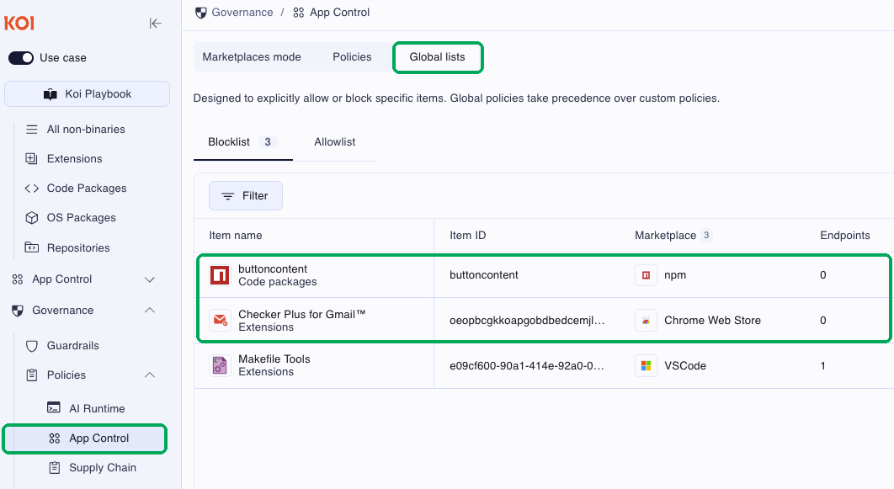
ПримечаниеGlobal lists применяются раньше custom policies. Чтобы заблокировать элемент во всей компании, его добавляют в Blocklist, а чтобы всегда разрешать — в Allowlist.
6.3 Custom Policy и Impact Check
AI Runtime policy
Политики App Control определяют, какие элементы можно установить. Политики AI Runtime определяют, что может делать установленный AI coding agent во время работы: какие skills и MCP tools он может использовать и для каких действий требуется подтверждение пользователя.
- SOC ADMIN Перейдите в левом меню на страницу Governance → Policies → AI Runtime и нажмите Create policy в правом верхнем углу.
- SOC ADMIN В разделе Scope в поле Agents выберите агентов, к которым будет применяться политика (Cursor, Claude Code, Codex, GitHub Copilot и др.), а в поле Endpoint groups — свою группу.
- SOC ADMIN В разделе Action выберите действие: Block блокирует операцию, Ask запрашивает подтверждение пользователя перед ней, Allow разрешает её.
- SOC ADMIN В разделе Rules укажите, к какому Skill или MCP tool относится правило. С помощью Add condition можно добавить условие, а с помощью Add rule — новое правило.
- SOC ADMIN Перед сохранением политики нажмите Run impact check, чтобы увидеть её эффект.
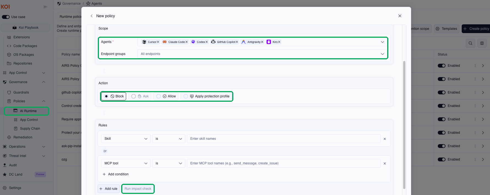
Templates
- SOC ADMIN На странице AI Runtime нажмите Templates в правом верхнем углу.
- SOC ADMIN Отфильтруйте шаблоны по действию (Ask, Block, High impact) или по категории (Secrets & Credentials, Cloud & infra, Destructive actions, Code & repo и др.). В каждом шаблоне указаны действие, соответствие MITRE ATLAS и краткое описание.
- SOC ADMIN Откройте и изучите шаблон Control credential file access. Этот шаблон запрашивает подтверждение разработчика, когда AI-агент пытается прочитать файл с учётными данными, например
.envили облачный конфиг.

7. Remediation
Одной лишь блокировки новых установок недостаточно: рискованные элементы, уже установленные на машинах, тоже нужно удалить. В этом разделе вы удалите рискованный элемент с endpoint'а через консоль.
- SOC ADMIN Перейдите в левом меню на страницу Governance → Remediation. На странице четыре вкладки: Review (элементы, ожидающие проверки), Pending (элементы, удаление которых запущено), Remediated (удалённые элементы) и Dismissed (проигнорированные элементы).
- SOC ADMIN На вкладке Review найдите элементы на своей машине по столбцу Hostname. Столбец Reason показывает, из-за какого правила или guardrail элемент попал в список.
- SOC ADMIN Выберите установленный на вашей машине элемент с высоким уровнем риска (например, Youtube Unblocked) и нажмите кнопку Remediate справа в строке.

Статус элемента меняется на Pending. Скрипт на endpoint'е удалит элемент при следующем запуске, и статус обновится на Remediated.
- DEVELOPER Убедитесь на лабораторной машине, что элемент удалён. Если это расширение VS Code, выполните команду ниже и проверьте, что его нет в списке:
code --list-extensionsЕсли это расширение браузера, откройте в Chrome страницу chrome://extensions.
- SOC ADMIN В записи remediation проверьте, кто запустил операцию, на какой машине и для какой версии.
ПримечаниеУдаление выполняется при следующем запуске скрипта на endpoint'е. Если элемент не удалился сразу, подождите несколько минут.
ПримечаниеЕсли соответствующие guardrails включены, элементы, признанные вредоносными или удалённые из маркетплейса, могут удаляться автоматически.
8. Runtime: AI Coding Agent
AI coding agents выполняют команды, читают файлы и отправляют запросы к внешним сервисам с правами пользователя. AES вмешивается непосредственно перед тем, как агент запустит tool (pre-tool hook), и в соответствии с политикой блокирует операцию или запрашивает подтверждение пользователя.
- SOC ADMIN Перейдите в левом меню на страницу Agentic AI → AIDR. На ней перечислены сессии AI coding agents и выполненные ими действия. В верхней части страницы показано число сессий по агентам (Claude Code, Codex, GitHub Copilot).
- SOC ADMIN Для каждой сессии изучите столбцы: Agent, Endpoint, Actions (типы действий агента: File access, Command, Web access), Governed by (guardrail или runtime policy, применённые к сессии), Events и Duration.
- SOC ADMIN Нажмите на одну из сессий, у которой в столбце Governed by указан guardrail или политика. Изучите команды, которые агент пытался выполнить, прочитанные им файлы и заблокированные операции.
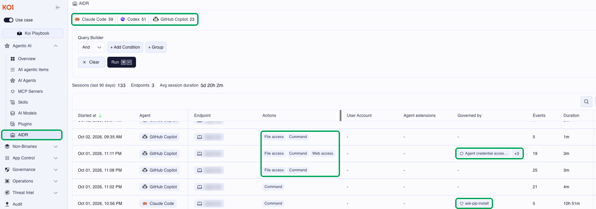
Демонстрация: инструктор попросит AI-агента на лабораторной машине прочитать файл .env в папке проекта и отправить запрос на внешний адрес с помощью curl. Эти действия контролируются политиками AI Runtime, которые вы видели в разделе 6.3, и guardrails для агентов.
Операция блокируется до выполнения. Сообщение о блокировке отображается в окне чата агента, и разработчик может запросить оттуда исключение. Сессия также отображается на странице AIDR.
ПримечаниеФайл .env на лабораторной машине содержит только примеры значений; реальных паролей или ключей в нём нет.
9. Threat Intel: Threat Center
Исследовательская команда AES постоянно отслеживает новые атаки на цепочку поставок, появляющиеся в маркетплейсах. В Threat Center можно увидеть эти угрозы и затронута ли ими ваша среда.
- SOC ADMIN Перейдите в левом меню на страницу Threat Intel → Threat Center.
- SOC ADMIN В разделе Recent active threats detected изучите недавно обнаруженные вредоносные элементы. На каждой карточке указаны название элемента, его издатель и метка Malware.
- SOC ADMIN В списке Latest supply chain threats изучите актуальные атаки на цепочку поставок. У каждой записи есть дата, заголовок, краткое описание и метка (Security update, Flash security update).
- SOC ADMIN В фильтре Any impact status в правом верхнем углу выберите Compromised. В списке останутся только угрозы, затронувшие элементы в вашей среде.
- SOC ADMIN Нажмите на запись и изучите подробности атаки и её влияние на вашу среду.

10. Заключение
На этом воркшопе вы прошли один и тот же сценарий в двух ролях. В роли разработчика вы увидели, как рискованные элементы блокируются в момент установки и как можно запросить одобрение. В роли SOC-администратора вы изучили в единой консоли, что установлено в среде, какие риски это несёт и какие механизмы контроля применяются.
| Вопрос | Раздел с ответом |
|---|---|
| Что установлено на машинах? | Раздел 4 – Inventory |
| К чему у этих инструментов есть доступ и насколько они рискованны? | Раздел 5 – Анализ рисков |
| Можем ли мы заблокировать что-то рискованное в момент установки? | Разделы 1–3 и 6 – Prevention в момент установки |
| Как удалить уже установленные рискованные элементы? | Раздел 7 – Remediation |
| Что делают AI-агенты? | Раздел 8 – Runtime |
| Затронула ли нас новая атака на цепочку поставок? | Раздел 9 – Threat Center |
Интеграция с существующей средой
- AES не заменяет ваш EDR, а отслеживает уровень расширений, пакетов, MCP-серверов и AI-агентов, который EDR не видит. Он может работать автономно вместе с вашим EDR.
- Если вы используете Cortex XDR, AES можно включить через агент XDR в режиме XDR + AES или AES only.
- Трафик маркетплейсов можно направлять в AES через существующие SWG-решения, например Prisma Access.
Следующий шаг: чтобы увидеть картину в вашей собственной среде, мы можем спланировать двухнедельный PoC на нескольких машинах разработчиков.
Ресурсы
- Agentic Endpoint Security (AES) – Solution Brief
- Документация AES (Cortex Docs)
- Документация по Code package prevention
- Securing the Agentic Endpoint (Palo Alto Networks Blog)
- A Quarter of Innovation with Agentic Endpoint Security (Palo Alto Networks Blog)
- Introducing Cortex XDR 6.0: Built for Endpoints. Ready for Agents.